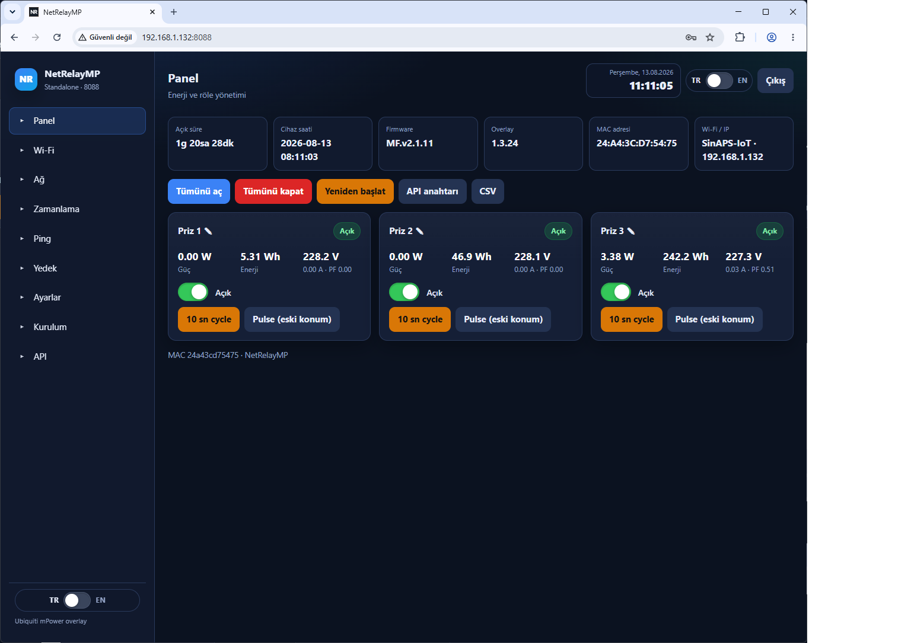
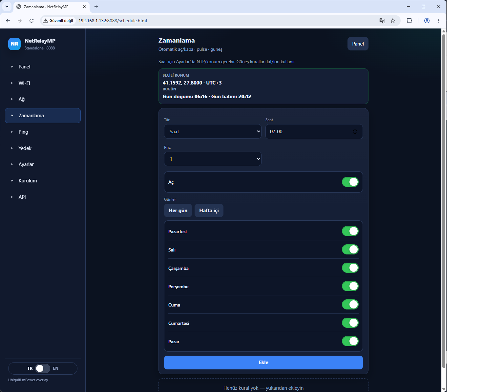
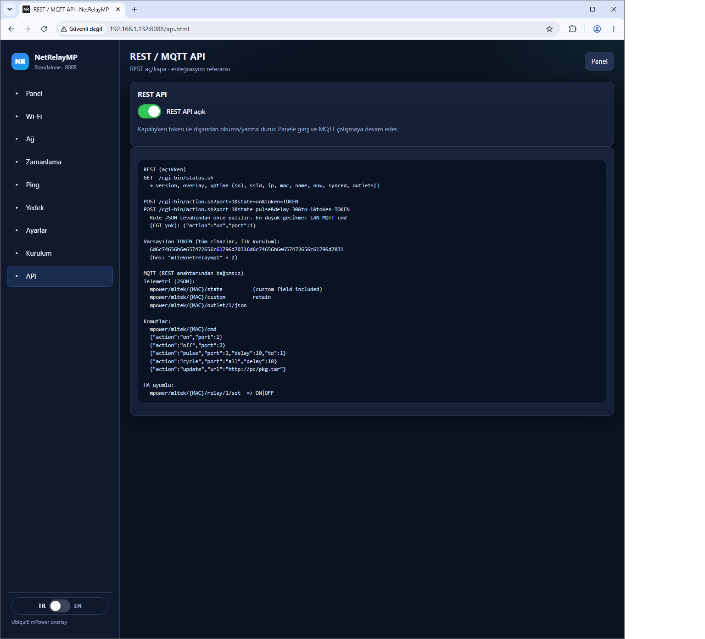
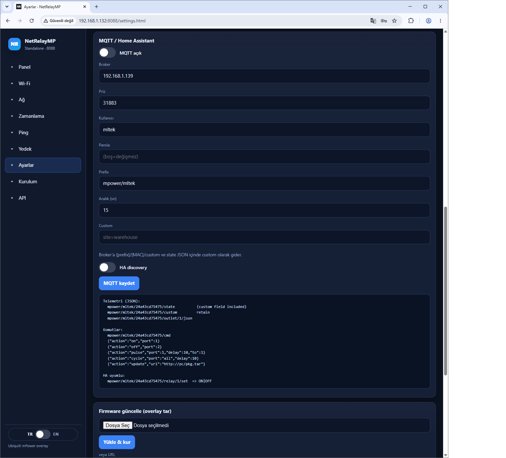
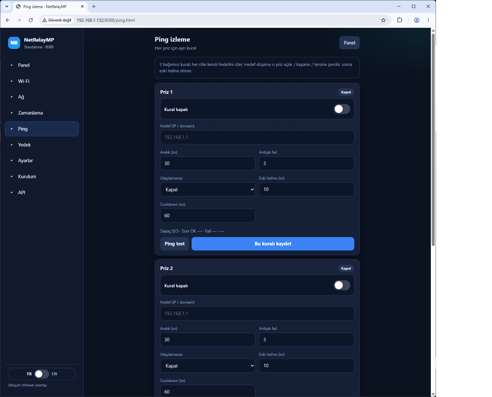

SSID tara/bağlan (Station veya WDS). STA düşünce kurtarma AP 192.168.2.20:8088 geri gelir. DHCP veya statik IP; DHCP yoksa acil profil 192.168.1.50.
mFi mPower donanımı + bağımsız overlay. TR/EN panel, MQTT, zamanlama, ping izleme ve filo araçları — sizin ağınızda.
Donanım + overlay 1.3.24
Üç Schuko priz, Wi‑Fi, Device Reset ve Circuit Breaker Reset. Stok firmware kalır; NetRelayMP overlay modern panel ve otomasyonu ekler.
Kabiliyetler · 1.3.24
Kurulum sihirbazından MQTT ve filo yedeklemeye — cihazda gerçekten çalışan katman.
SSID tara/bağlan (Station veya WDS). STA düşünce kurtarma AP 192.168.2.20:8088 geri gelir. DHCP veya statik IP; DHCP yoksa acil profil 192.168.1.50.
Anlık: açık/kapalı, güç (W), enerji (Wh), volt (örn. 227.2 V). Tek priz veya tümünü aç-kapa, 10 sn cycle, pulse.
Prefix mpower/mltek/{MAC}: state, uptime, custom alan, cmd (on/off/pulse/cycle/update). HA discovery ile switch ve sensör.
Token’lı okuma/yazma: status.sh / action.sh. API menüsünden REST aç/kapa. MQTT ile aynı kontrol.
Haftanın günü, saat, pulse (1 saat açık / 1 saat dur). Gün batımından 30 dk sonra aç; gün doğumundan 30 dk önce kapat.
IP’ye erişilemezse örn. port 1’i 10 sn kapat, sonra eski haline dön. Aç / kapa / tersine; cooldown peş peşe tetiklemeyi keser.
~30 sn: httpd :8088, Wi‑Fi, NTP, MQTT, zamanlayıcı, ping, UDP keşif ve buton izleme. Düşeni yeniden ayağa kaldırır.
JSON yedek/geri yükleme, clone-config.ps1, UDP 5555 “ben buradayım” (NRfinder :8088 açar). Overlay tarayıcıdan veya MQTT URL ile güncellenir.
LED: STA’da mavi, kurtarmada sarı, istenirse kapalı. Giriş admin / mltek. Fabrika yalnız Ayarlar’dan; fiziksel düğme ~2 sn reboot — uzun basmak overlay’i siler.
Yazılım · Türkçe arayüz
Aynı ekranlar İngilizce UI’da da var. Ayrıntılı anlatım: Özellikler (TR) · Features (EN).





Donanım + yazılım
Üç prizli mPower gövdesi; NetRelayMP ile yerel panel (~1 dk), MQTT ve saha operasyonu. Device Reset ~2 sn yeniden başlatır. Fabrika ayarı yalnız web Ayarlar’dan; overlay kalır.
Neden satın almalısınız?
Panel ve röleler sizin LAN’ınızda çalışır. Broker zorunlu değil; MQTT kullanırsanız o da size aittir.
MQTT discovery, REST token ve Apple Home köprüsü (HA Bridge / Homebridge) ile hemen bağlanır.
Haftanın günü, 1 saat çalış / 1 saat dur, gün batımından 30 dk sonra ışık, doğumdan 30 dk önce kapa. NTP veya tarayıcı saati.
UDP 5555, JSON yedek ve clone script ile aynı Wi‑Fi/MQTT profilini filoya basmak kolay.
Kurtarma AP, watchdog, priz başına ping ve web fabrika — kopunca 192.168.2.20 ile geri dönülür.
Ayarlar’dan tar yükleme veya MQTT update + URL. Resmi .bin’e bağımlı değil; stok UI :8080 durur.
Sık sorulanlar
EOL Ubiquiti mFi mPower (MF.v2.1.11) üzerine kurulan bağımsız overlay. Stok firmware ve :8080 UI kalır; asıl kullanım http://IP:8088 — TR/EN panel, MQTT/HA, zamanlama, ping, yedek ve REST.
mFi mPower donanımı: wifidepo.com/ubnt-mpower-521 veya wifianten.com/ubnt-mpower-335. Yazılım: ubnt_mPOWER.
ubnt_mPOWER cihaz overlay’i (bu yazılım: panel, REST, MQTT istemcisi). mqttserver LAN MQTT broker + web panel (port 31883 / 8082). Cihazlar broker’a bağlanır.
Evet. HA discovery açıksa switch ve güç/uptime sensörleri çıkar. Apple Home native değil; HA HomeKit Bridge veya Homebridge ile Ev / Siri (doküman: HOMEKIT-TR).
Master’dan JSON yedek (isterseniz parolalar dahil), clone-config.ps1 ile diğer IP’lere basılır. UDP 5555 yayını NRfinder’ın :8088’i açmasını sağlar.
Windows’tan deploy.ps1; UI ~1 dk içinde :8088. Giriş: admin / mltek. Fabrika yalnız Ayarlar’dan (overlay kalır). Fiziksel düğme ~2 sn reboot; uzun basmak stok sıfırlama yapıp overlay’i siler.
Evet. Panel, röle, zamanlama ve yerel MQTT broker LAN’da çalışır. NTP yoksa Ayarlar’dan tarayıcı saati yazılır. Wi‑Fi kopunca kurtarma AP 192.168.2.20 geri gelir.
Device Reset: ~2 sn yeniden başlatma (yazılım fabrika değil). Circuit Breaker Reset: aşırı yükte atmış donanım kesicisini basmak içindir — yazılım sıfırlaması değildir.
Sonraki adım
Overlay 1.3.24: panel, MQTT, zamanlama, ping ve filo araçları. Kurulum ve saha dokümanlarıyla başlayın.